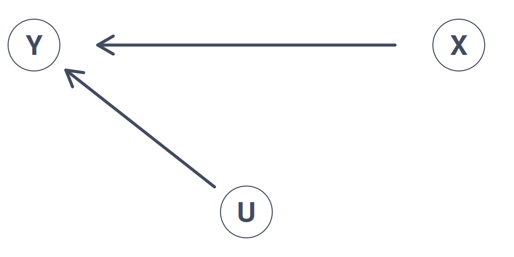
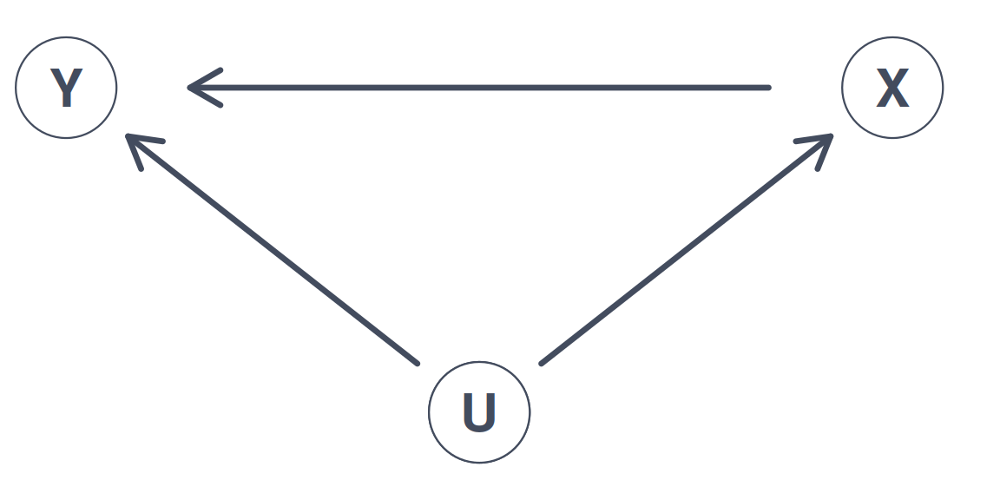
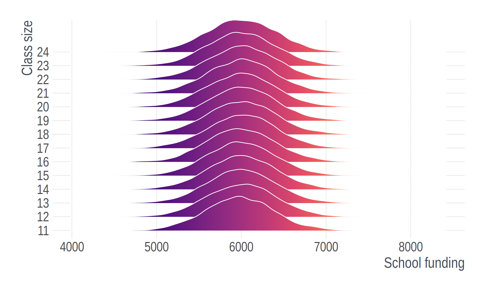
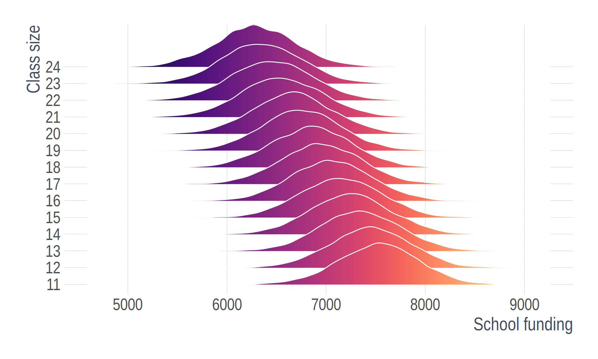
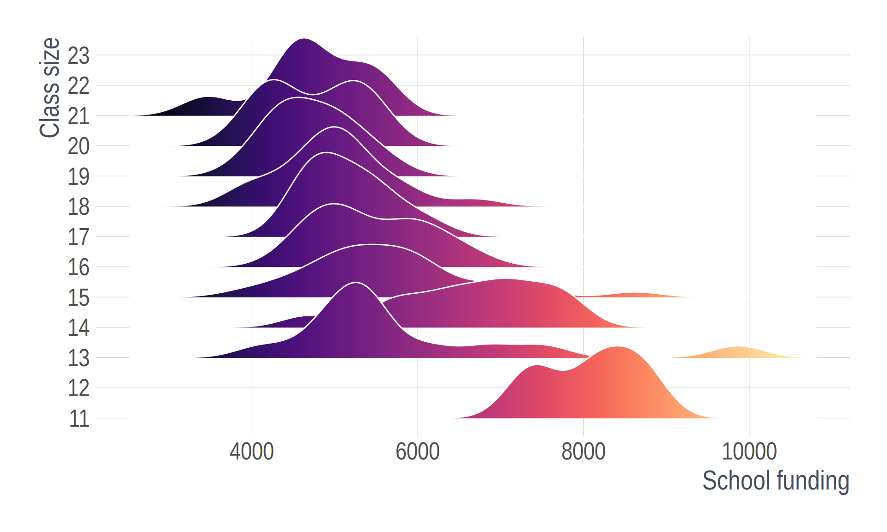
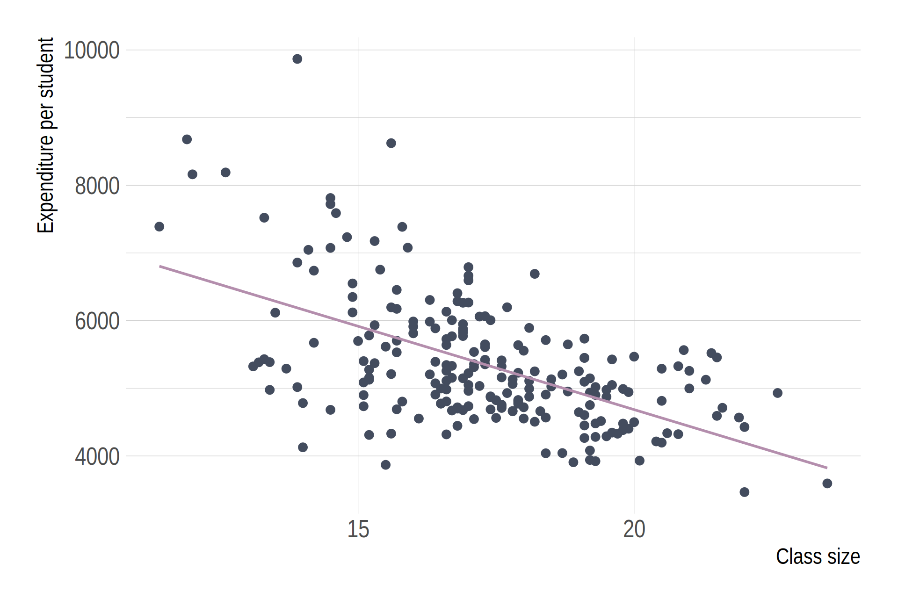
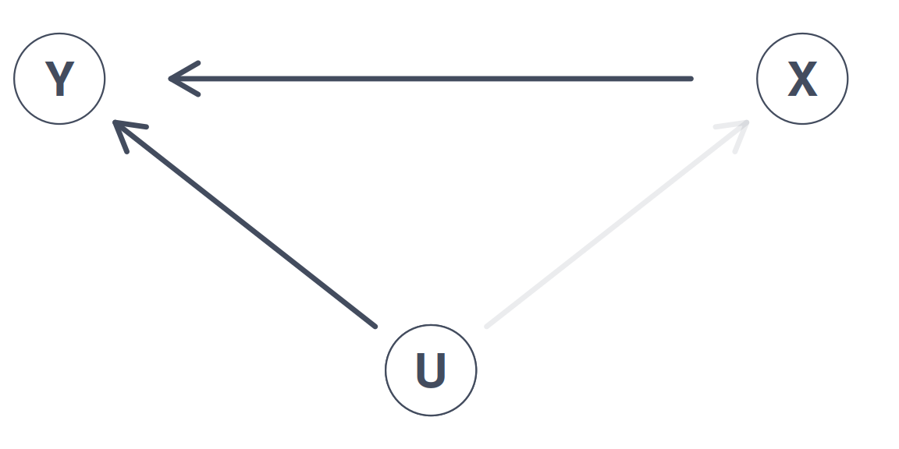
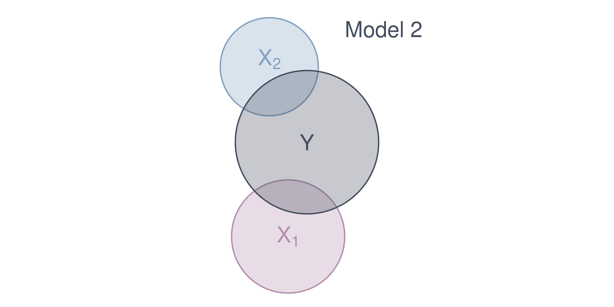
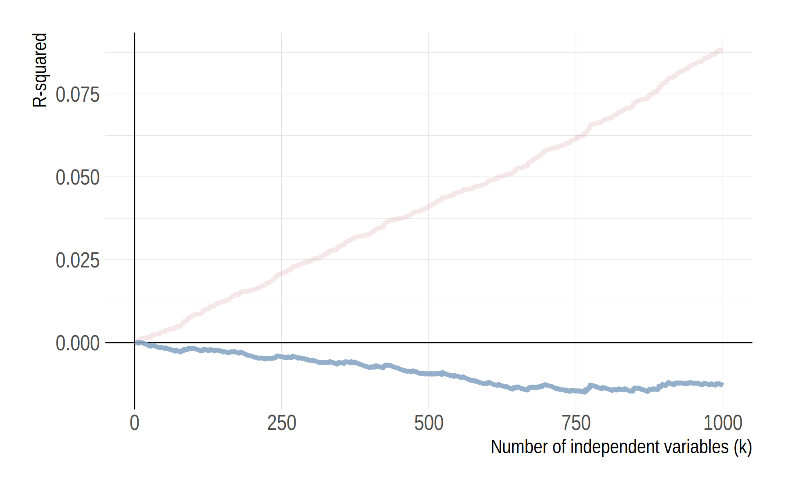

Multiple Linear Regression and Omitted Variable Bias
EC 320, Set 09
Andrew Dickinson
07 2024
Ex. Effect of class sizes on test scores
- Empirical question:
-
What improvement do smaller class sizes have on student test scores, if any?
Ex. Effect of class sizes on test scores
Estimate effect of class size on test scores with the following:
\[ \text{Scores}_i = \beta_0 + \beta_1 \text{Class Size}_i + u_i \]
Data: Test performance and class across school districts in MA
- Scores: 4th grade test scores agg. across reading, math, and science
- Class size: Ratio of number of students to teachers
Always plot your data first

Raw data

Fitting OLS
Ex. Effect of class sizes on test scores
Estimate effect of class size on test scores with the following:
\[ \text{Scores}_i = \beta_0 + \beta_1 \text{Class Size}_i + u_i \]
Q. How might smaller class sizes influence test scores?
A. More personalized teaching, less classroom disruptions etc.
Q. What sign would we expect on \(\beta_1\)?
A.
\[ \beta_1 < 0 \]
Smaller class sizes (X) increases test scores (Y)
Ex. Effect of class sizes on test scores
Estimate effect of class size on test scores with the following:
\[ \text{Scores}_i = \beta_0 + \beta_1 \text{Class Size}_i + u_i \]
Q. Do we think \(\beta_1\) will be a good guess of the underlying population parameter?
A. In \(u_i\), several variables are correlated with class size and test scores
Such as… school funding, which might affect:
- Textbooks
- Computers
- Teacher salary
- Attract high income parents
Smaller class sizes (X) increases test scores (Y)

Smaller class sizes (X) increases test scores (Y) along with greater school funding (U)

Smaller class sizes (X) increases test scores (Y) along with greater school funding (U). And, school funding (U) is correlated with test scores (X).
Any unobserved variable that connects a backdoor path between class size (X) and test scores (Y) will bias our point estimate of \(\beta_1\).
Any unobserved variable that connects a backdoor path between class size (X) and test scores (Y) will bias our point estimate of \(\beta_1\). Why?
Any unobserved variable that connects a backdoor path between class size (X) and test scores (Y) will bias our point estimate of \(\beta_1\). Why?
A1. Linearity
A2. Sample Variation
A3. Exogeniety
A4. Homoskedasticity
A5. Non-autocorrelation
A6. Normality
Any unobserved variable that connects a backdoor path between class size (X) and test scores (Y) will bias our point estimate of \(\beta_1\). Why?
A1. Linearity
A2. Sample Variation
A3. Exogeniety: The \(X\) variable is exogenous
A4. Homoskedasticity
A5. Non-autocorrelation
A6. Normality
Any unobserved variable that connects a backdoor path between class size (X) and test scores (Y) will bias our point estimate of \(\beta_1\). Why?
A. Because is violates the exogeniety assumption
\[ \mathop{\mathbb{E}}\left( u|\text{Class Size} \right) \neq 0 \]
Correlation between class size and school funding (\(u_i\)) is not zero.
Graphically…
Valid exogeniety, i.e., \(\mathop{\mathbb{E}}\left( u \mid X \right) = 0\)
Note: This is simulated data
Invalid exogeniety, i.e., \(\mathop{\mathbb{E}}\left( u \mid X \right) \neq 0\)
Note: This is simulated data
What the actual data look like:
What the actual data look like, as a scatter plot:
This violation has a name. We call it omitted variable bias
Omitted Variable Bias
Omitted variable bias
Bias that occurs in statistical models when a relevant variable is not included in the model.
Consequence: Leads to the incorrect estimation of the relationships between variables, which may affect the reliability of the model’s predictions and inferences.
Solution: “Control” for the omitted variable(s).
Class funding (U) confounds our estimates of smaller class sizes (X) on test scores (Y).

Any unobserved variable that connects a backdoor path between class size (X) and test scores (Y) will bias our point estimate of \(\beta_1\).
Class funding (U) confounds our estimates of smaller class sizes (X) on test scores (Y). Including data on school funding (U) in a multiple linear regression allows us to close this backdoor path.
With all backdoor paths closed, point estimates of \(\beta_1\) will no longer be biased and will return the population parameter of interest
In a little more detail, we can derive the bias mathematically.
Omitted Variable Bias
Imagine we have a population model of the form:
\[ Y_i = \beta_0 + \beta_1 X_i + \beta_2 Z_i + u_i \]
where \(Z_i\) is a relevant variable that is omitted from the model.
and suppose we estimate the following model:
\[ Y_i = \hat{\beta}_0 + \hat{\beta}_1 X_i + v_i \]
where \(v_i\) is the new error term that absorbs the effect of \(Z_i\)
Omitted Variable Bias
To derive the bias of \(\hat{\beta}_1\), we need to understand the relationship between \(Z_i\) and \(X_i\). Assume that:
\[ Z_i = \gamma_0 + \gamma_1 X_i + \varepsilon_i \]
where \(\varepsilon_i\) is the part of \(Z_i\) that is uncorrelated with \(X_i\)
If we substitute \(Z_i\) into the population model, we get:
\[ \begin{align*} Y_i &= \beta_0 + \beta_1 X_i + \beta_2 \left( \gamma_0 + \gamma_1 X_i + \varepsilon_i \right) + u_i \\ &= \beta_0 + \beta_2 \gamma_0 + \left( \beta_1 + \beta_2 \gamma_1 \right) X_i + \beta_2 \varepsilon_i + u_i \end{align*} \]
Omitted Variable Bias
We can rewrite this expression:
\[ \begin{align*} Y_i &= \beta_0 + \beta_1 X_i + \beta_2 \left( \gamma_0 + \gamma_1 X_i + \varepsilon_i \right) + u_i \\ &= \beta_0 + \beta_2 \gamma_0 + \left( \beta_1 + \beta_2 \gamma_1 \right) X_i + \beta_2 \varepsilon_i + u_i \end{align*} \]
as: \(Y_i = \widehat{\beta}_0 + \widehat{\beta}_1 X_i + v_i\)
where:
- \(\widehat{\beta}_0 = \beta_0 + \beta_2 \gamma_0\)
- \(\widehat{\beta}_1 = \beta_1 + \beta_2 \gamma_1\)
- \(v_i = \beta_2 \varepsilon_i + u_i\)
Thus, we can see how \(Z_i\) will bias our estimate of \(\beta_1\)
Omitted Variable Bias
Recall that we define the bias of an estimator as:
\[ \mathop{\text{Bias}}_\theta \left( W \right) = \mathop{\boldsymbol{E}}\left[ W \right] - \theta \]
The bias of the estimator \(\hat{\beta}_1\) is given by:
\[ \begin{align*} \mathop{\text{Bias}}_{\beta_1} \left( \hat{\beta}_1 \right) &= \mathop{\boldsymbol{E}}\left[ \hat{\beta}_1 \right] - \beta_1 \\ &= \mathop{\boldsymbol{E}}\left[ \beta_1 + \beta_2 \gamma_1 \right] - \beta_1 \\ &= \beta_2 \gamma_1 \end{align*} \]
Omitted Variable Bias
Finally, we can write the bias of \(\hat{\beta}_1\) in terms of the correlation between \(X_i\) and \(Z_i\):
\[ \gamma_1 = \frac{\text{Cov}\left( X_i, Z_i \right)}{\text{Var}\left( X_i \right)} \]
Therefore, we can write the bias of \(\hat{\beta}_1\) as:
\[ \mathop{\text{Bias}}_{\beta_1} \left( \hat{\beta}_1 \right) = \beta_2 \frac{\text{Cov}\left( X_i, Z_i \right)}{\text{Var}\left( X_i \right)} \]
Signing the Bias
Sometimes we’re stuck with omitted variable bias.
\[ \mathop{\boldsymbol{E}} \left[ \hat{\beta}_1 \right] = \beta_1 + \beta_2 \dfrac{ \mathop{\text{Cov}} \left( X_i,\, Z_i \right)}{\mathop{\text{Var}} \left( X_i \right)} \]
When this happens, we can often at least know the direction of the bias.
Signing the Bias
Begin with
\[ \mathop{\boldsymbol{E}} \left[ \hat{\beta}_1 \right] = \beta_1 + \beta_2 \dfrac{ \mathop{\text{Cov}} \left( X_i,\, Z_i \right)}{\mathop{\text{Var}} \left( X_i \right)} \]
We know \(\color{#8FBCBB}{\mathop{\text{Var}} \left( X_i \right) > 0}\). Suppose \(\color{#81A1C1}{\beta_2 > 0}\) and \(\color{#EBCB8B}{\mathop{\text{Cov}} \left( X_i,\,Z_i \right) > 0}\). Then
\[ \begin{align} \mathop{\boldsymbol{E}} \left[ \hat{\beta}_1 \right] = \beta_1 + \color{#81A1C1}{(+)} \dfrac{\color{#EBCB8B}{(+)}}{\color{#8FBCBB}{(+)}} \implies \mathop{\boldsymbol{E}} \left[ \hat{\beta}_1 \right] > \beta_1 \end{align} \] ∴ In this case, OLS is biased upward (estimates are too large).
\[ \begin{matrix} \enspace & \color{#EBCB8B}{\text{Cov}(X_i,\,Z_i)> 0} & \color{#EBCB8B}{\text{Cov}(X_i,\,Z_i)< 0} \\ \color{#81A1C1}{\beta_2 > 0} & \text{Upward} & \\ \color{#81A1C1}{\beta_2 < 0} & & \end{matrix} \]
Signing the Bias
Begin with
\[ \mathop{\boldsymbol{E}} \left[ \hat{\beta}_1 \right] = \beta_1 + \beta_2 \dfrac{ \mathop{\text{Cov}} \left( X_i,\, Z_i \right)}{\mathop{\text{Var}} \left( X_i \right)} \]
We know \(\color{#8FBCBB}{\mathop{\text{Var}} \left( X_i \right) > 0}\). Suppose \(\color{#81A1C1}{\beta_2 < 0}\) and \(\color{#EBCB8B}{\mathop{\text{Cov}} \left( X_i,\,Z_i \right) > 0}\). Then
\[ \begin{align} \mathop{\boldsymbol{E}} \left[ \hat{\beta}_1 \right] = \beta_1 + \color{#81A1C1}{(-)} \dfrac{\color{#EBCB8B}{(+)}}{\color{#8FBCBB}{(+)}} \implies \mathop{\boldsymbol{E}} \left[ \hat{\beta}_1 \right] < \beta_1 \end{align} \] ∴ In this case, OLS is biased downward (estimates are too small).
\[ \begin{matrix} \enspace & \color{#EBCB8B}{\text{Cov}(X_i,\,Z_i)> 0} & \color{#EBCB8B}{\text{Cov}(X_i,\,Z_i)< 0} \\ \color{#81A1C1}{\beta_2 > 0} & \text{Upward} & \\ \color{#81A1C1}{\beta_2 < 0} & \text{Downward} & \end{matrix} \]
Signing the Bias
Begin with
\[ \mathop{\boldsymbol{E}} \left[ \hat{\beta}_1 \right] = \beta_1 + \beta_2 \dfrac{ \mathop{\text{Cov}} \left( X_i,\, Z_i \right)}{\mathop{\text{Var}} \left( X_i \right)} \]
We know \(\color{#8FBCBB}{\mathop{\text{Var}} \left( X_i \right) > 0}\). Suppose \(\color{#81A1C1}{\beta_2 > 0}\) and \(\color{#EBCB8B}{\mathop{\text{Cov}} \left( X_i,\,Z_i \right) < 0}\). Then
\[ \begin{align} \mathop{\boldsymbol{E}} \left[ \hat{\beta}_1 \right] = \beta_1 + \color{#81A1C1}{(+)} \dfrac{\color{#EBCB8B}{(-)}}{\color{#8FBCBB}{(+)}} \implies \mathop{\boldsymbol{E}} \left[ \hat{\beta}_1 \right] < \beta_1 \end{align} \] ∴ In this case, OLS is biased downward (estimates are too small).
\[ \begin{matrix} \enspace & \color{#EBCB8B}{\text{Cov}(X_i,\,Z_i)> 0} & \color{#EBCB8B}{\text{Cov}(X_i,\,Z_i)< 0} \\ \color{#81A1C1}{\beta_2 > 0} & \text{Upward} & \text{Downward} \\ \color{#81A1C1}{\beta_2 < 0} & \text{Downward} & \end{matrix} \]
Signing the Bias
Begin with
\[ \mathop{\boldsymbol{E}} \left[ \hat{\beta}_1 \right] = \beta_1 + \beta_2 \dfrac{ \mathop{\text{Cov}} \left( X_i,\, Z_i \right)}{\mathop{\text{Var}} \left( X_i \right)} \]
We know \(\color{#8FBCBB}{\mathop{\text{Var}} \left( X_i \right) > 0}\). Suppose \(\color{#81A1C1}{\beta_2 < 0}\) and \(\color{#EBCB8B}{\mathop{\text{Cov}} \left( X_i,\,Z_i \right) < 0}\). Then
\[ \begin{align} \mathop{\boldsymbol{E}} \left[ \hat{\beta}_1 \right] = \beta_1 + \color{#81A1C1}{(-)} \dfrac{\color{#EBCB8B}{(-)}}{\color{#8FBCBB}{(+)}} \implies \mathop{\boldsymbol{E}} \left[ \hat{\beta}_1 \right] > \beta_1 \end{align} \] ∴ In this case, OLS is biased upward (estimates are too large).
\[ \begin{matrix} \enspace & \color{#EBCB8B}{\text{Cov}(X_i,\,Z_i)> 0} & \color{#EBCB8B}{\text{Cov}(X_i,\,Z_i)< 0} \\ \color{#81A1C1}{\beta_2 > 0} & \text{Upward} & \text{Downward} \\ \color{#81A1C1}{\beta_2 < 0} & \text{Downward} & \text{Upward} \end{matrix} \]
Signing the Bias
Thus, in cases where we have a sense of
the sign of \(\mathop{\text{Cov}} \left( X_i,\,Z_i \right)\)
the sign of \(\beta_2\)
we know in which direction bias pushes our estimates.
Direction of Bias
\[ \begin{matrix} \enspace & \color{#EBCB8B}{\text{Cov}(X_i,\,Z_i)> 0} & \color{#EBCB8B}{\text{Cov}(X_i,\,Z_i)< 0} \\ \color{#81A1C1}{\beta_2 > 0} & \text{Upward} & \text{Downward} \\ \color{#81A1C1}{\beta_2 < 0} & \text{Downward} & \text{Upward} \end{matrix} \]
Multiple linear regression


Multiple linear regression
Simple linear regression features one dependent variable and one independent variable:
\[ \color{#434C5E}{Y_i} = \beta_0 + \beta_1 \color{"#81A1C1"}{X_i} + u_i \]
Multiple linear regression features one dependent variable and multiple independent variables:
\[ \color{#434C5E}{Y_i} = \beta_0 + \beta_1 \color{"#81A1C1"}{X_{1i}} + \beta_2 \color{"#81A1C1"}{X_{2i}} + \cdots + \beta_{k} \color{"#81A1C1"}{X_{ki}} + u_i \]
This serves more than one purpose. Multiple independent variables improves predictions, avoids OVB, and better explains variation in \(Y\).
Multiple linear regression Ex.
Controlling for school funding
\[ \text{Scores}_i = \beta_0 + \beta_1 \text{Class Size}_i + \beta_2 \text{Expenditure}_i+ u_i \]
| independent variable | 1 | 2 |
|---|---|---|
| Intercept | 781.196 | 674.93 |
| (16.46) | (16.46) | |
| Class size | -3.768 | -0.96 |
| (0.61) | (0.64) | |
| Expenditure | 0.013 | |
| (0.002) |
Multiple linear regression Ex.
Controlling for school funding
\[ \text{Scores}_i = \beta_0 + \beta_1 \text{Class Size}_i + \text{Expenditure}_i+ u_i \]
| independent variable | 1 | 2 |
|---|---|---|
| Intercept | 781.196 | 674.93 |
| (16.46) | (16.46) | |
| Class size | -3.768 | -0.96 |
| (0.61) | (0.64) | |
| Expenditure | 0.013 | |
| (0.002) |
How does it work? We can think of it almost like demeaning.

What happens to variation in \(Y\) after we account for school funding?
Adjusted R-squared
Goodness of fit
We can describe the variation explain in \(Y\) with venn diagrams

Goodness of fit
Suppose we have two models:
Model 1 \(Y_i = \beta_0 + \beta_1 X_{1i} + u_i\).
Model 2: \(Y_i = \beta_0 + \beta_1 X_{1i} + \beta_2 X_{2i} + v_i\)
T/F? Model 2 will yield a lower \(R^2\) than Model 1.
(Hint: Think of \(R^2\) as \(R^2 = 1 - \frac{\text{RSS}}{\text{TSS}}\).)
Goodness of fit
We can describe the variation explain in \(Y\) with venn diagrams

Goodness of fit
We can describe the variation explain in \(Y\) with venn diagrams
Problem: As we add variables to our model, \(R^2\) mechanically increases.
Let me show you this problem with a simulation
Simulate a dataset of 10,000 observations on \(y\) and 1,000 random \(x_k\) variables, where
\[ y \perp x_k \quad \forall x_k \; \text{s.t.} \; k = 1, 2, \dots, 1000 \]
We have 1,000 independent variables that are independent to the dependent variable. Each \(x_k\) has no relationship to \(y\) whatsoever.
Problem: As we add variables to our model, \(\color{#314f4f}{R^2}\) mechanically increases.
Pseudo-code:
Generate 10,000 obs. on \(y\)
Generate 10,000 obs. on variables \(x_1\) through \(x_{1000}\)
Regressions:
- LM1: Regress \(y\) of \(x_1\); record \(R^2\)
- LM2: Regress \(y\) of \(x_1\) and \(x_2\); record \(R^2\)
- …
- LM1000: Regress \(y\) on \(x_1\), \(x_2\), …, \(x_{1000}\); record \(R^2\)
Problem: As we add variables to our model, \(\color{#314f4f}{R^2}\) mechanically increases.
R code for the simulation:
# Generate data --------------------------------------------------------------
# Set random seed
set.seed(1234)
# Generate data
y <- rnorm(1e4)
x <- matrix(data = rnorm(1e7), nrow = 1e4)
x %<>% cbind(matrix(data = 1, nrow = 1e4, ncol = 1), x)
# Simulation -----------------------------------------------------------------
# Loop across regressions
r_df <- mclapply(X = 1:(1e3-1), mc.cores = detectCores() - 1, FUN = function(i) {
# Add one additional regressor every iteration
tmp_reg <- lm(y ~ x[,1:(i+1)]) %>% summary()
# Export R2
data.frame(
k = i + 1,
r2 = tmp_reg %$% r.squared,
r2_adj = tmp_reg %$% adj.r.squared
)
}) %>% bind_rows()Problem: As we add variables to our model, \(R^2\) mechanically increases.
Problem: As we add variables to our model, \(R^2\) mechanically increases.
One solution: Penalize for the number of variables, e.g., adjusted \(R^2\):
Goodness of fit
Problem: As we add variables to our model, \(R^2\) mechanically increases.
One solution: Penalize for the number of variables, e.g., adjusted \(R^2\):
\[ \bar{R}^2 = 1 - \dfrac{\sum_i \left( Y_i - \hat{Y}_i \right)^2/(n-k-1)}{\sum_i \left( Y_i - \bar{Y} \right)^2/(n-1)} \]
Note: Adjusted \(R^2\) need not be between 0 and 1.
Goodness of fit
So how do you find \(R^2\) and \(\bar{R^2}\) in {{< fa brands r-project >}}? broom::glance()
# Run model
model = lm(score4 ~ stratio + expreg, schools_dt)
# Print results as tibble
broom::tidy(model)# A tibble: 3 × 5
term estimate std.error statistic p.value
<chr> <dbl> <dbl> <dbl> <dbl>
1 (Intercept) 675. 16.5 41.0 2.65e-103
2 stratio -0.960 0.644 -1.49 1.37e- 1
3 expreg 0.0126 0.00160 7.83 2.19e- 13# A tibble: 1 × 12
r.squared adj.r.squa…¹ sigma stati…² p.value df logLik AIC BIC devia…³
<dbl> <dbl> <dbl> <dbl> <dbl> <dbl> <dbl> <dbl> <dbl> <dbl>
1 0.341 0.335 17.2 55.5 3.92e-20 2 -924. 1856. 1870. 63521.
# … with 2 more variables: df.residual <int>, nobs <int>, and abbreviated
# variable names ¹adj.r.squared, ²statistic, ³devianceMultiple regression
There are tradeoffs to remember as we add/remove variables:
Fewer variables
- Explains less variation in \(y\)
- Provide simple interpretations and visualizations
- More worried about omitted-variable bias
More variables
- More likely to find spurious relationships1
- More difficult interpretation
- The variance of our point estimates will be bigger
- We still might have omitted-variable bias
Multiple regression
There are tradeoffs to remember as we add/remove variables:
Fewer variables
- Explains less variation in \(y\)
- Provide simple interpretations and visualizations
- More worried about omitted-variable bias
More variables
- More likely to find spurious relationships1
- More difficult interpretation
- The variance of our point estimates will be bigger
- We still might have omitted-variable bias
EC320, Set 09 | Omitted Variable Bias